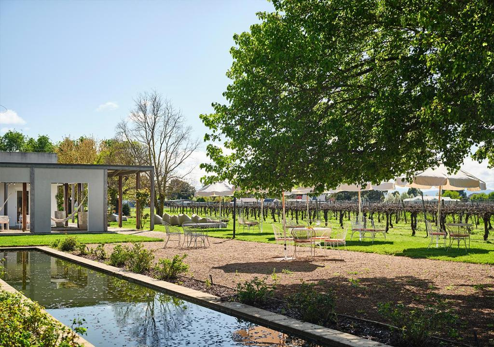

Escape to Victoria: A Guide to the Ultimate Countryside Escape
From rolling vineyards and historic gold rush towns to rugged mountain ranges and peaceful lakes, rural Victoria offers a perfect escape from the hustle and bustle.
Whether you're after a gourmet food and wine adventure, an outdoor expedition, or a cozy countryside retreat, Victoria's diverse regions have something for everyone.
Weather and Best Times to Visit
Rural Victoria has a varied climate depending on the region, but generally:
| Summer (Dec-Feb) | Autumn (Mar-May) | Winter (Jun-Aug) | Spring (Sep-Nov) |
|---|---|---|---|
| Warm and dry (25-35c), perfect for lake trips and wine tours. | Mild (10-25c) with golden foliage - great for hiking and food festivals. | Cold (0-15c), with snow in alpine areas, making it a cozy time for cabins and fireplaces. | Fresh and green, with wildflowers blooming and mild temperatures. |
Top Things to See and Do
High Country and Alpine Victoria
- Bright and Mount Beauty: Stunning in autumn, with brilliant foliage and cycling trails.
- Mount Buller and Falls Creek: Top ski resorts in winter and hiking/biking havens in summer.
- King Valley: A slice of Italy in Australia, famous for prosecco and farm-to-table dining.
The Grampians and Western Victoria
- Grampians National Park: A must-visit for hiking, waterfalls and Indigenous rock art. Climb to the The Pinnacle for breathtaking views.
- Halls Gap: A charming town where you can spot kangaroos roaming freely.
- Wineries of the Pyrenees and Great Western: Sample award-winning Shiraz and sparkling wines.
Where to Eat and Drink
Rural Victoria is a foodie paradise, offering everything from rustic bakeries to award-winning wineries.
Provenance (Beechworth) |
The Pie Shed (Sorrento and regional locations) |
Mitchell Harris Wine Bar (Ballarat) |
Paynesville and Metung Seafood |
King Valley Prosecco Road |
Fine dining in a historic setting with a focus on local produce. | Known for classic Aussie meat pies and pastries. | A fantastic spot for wine tasting in the city's heart. | Fresh Gippsland Lakes seafood straight from the boat. | A must-do for sparkling wine lovers, with cellar doors like Dal Zotto and Pizzini. |
|---|
Where to Stay
Rural Victoria offers luxury lodges, cozy farm stays, and boutique hotels.
Lake House (Daylesford)
A luxurious lakeside retreat with a renowned resturant.
Grampians Eco YHA (Halls Gap)
A budget-friendly, eco-friendly stay in the heart of nature.
Lancemore Milawa
A beautiful boutique hotel in the King Valley wine region.
Mt Buller Alpine Lodges
Stay on the slopes for easy access to skiing and snowboarding in winter.